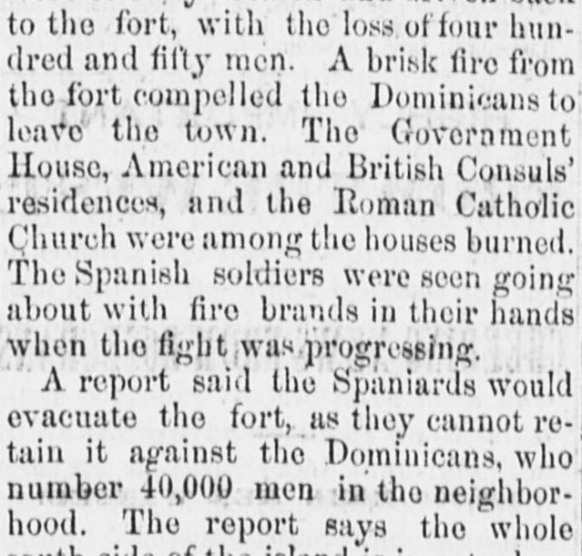
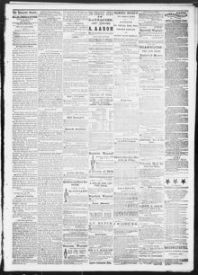

Tho Government House, American and British Consuls' residences, and the HumanLa Casa de Gobierno, las residencias de los cónsules estadounidense y británico, y el Human
The Lancaster Gazette. Lancaster, Ohio, November 5, 1863. Page 3. Published by Miller, Kooken & Sutphen. A semiweekly newspaper, 1863–1886.The Lancaster Gazette. Lancaster, Ohio, 5 de noviembre de 1863. Página 3. Publicado por Miller, Kooken & Sutphen. Periódico bisemanal, 1863–1886. View the originalVer el original


See the full pageVer la página completaAccording to The Lancaster gazette on November 5, 1863, fighting and fires in the Dominican Republic resulted in the destruction of the Government House, the Roman Catholic Church, and the American and British Consuls' residences, the latter of whom arrived at Grand Turk. Reports indicated that the entire south side of the island was in actual rebellion with 40,000 Dominicans in the neighborhood, and that Spanish soldiers pillaged the town before 600 Spaniards sortied from the fort and drove the Dominicans away with the aid of the fort's guns. The resulting fires destroyed numerous stores and properties belonging to foreign merchants, with losses in Santiago and Port-au-Platte expected to reach several millions of dollars.Según The Lancaster Gazette del 5 de noviembre de 1863, los combates e incendios en la República Dominicana ocasionaron la destrucción de la Casa de Gobierno, la iglesia católica y las residencias de los cónsules británico y estadounidense, habiendo llegado este último a Gran Turca. Los informes indicaban que toda la vertiente sur del territorio se hallaba en rebelión abierta con unos 40.000 dominicanos en las proximidades, y que la soldadesca española saqueó la población antes de que 600 peninsulares salieran de la fortaleza y rechazaran a los dominicanos con el auxilio de los cañones del fuerte. Los incendios resultantes destruyeron numerosos comercios y propiedades de comerciantes extranjeros, previéndose pérdidas millonarias en Santiago y Puerto Plata.